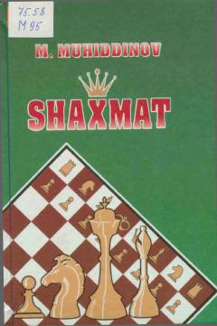

SShaxmatni yangi o'rganayotganlar uchun to'liq va qulay qo'llanma.
Mamajon Muhiddinovning «Shaxmat» qo'llanmasi maktab o'quvchilari va kam malakali shaxmatchilar uchun mo'ljallangan. Unda shaxmat tarixi, nazariyasi, o'yin qoidalari, mashhur shaxmatchilarning partiyalaridan namunalar va yumoristik hikoyalar keltirilgan. Kitob 2007-yilda «Sharq» nashriyotida beshinchi tuzatilgan va to'ldirilgan nashr sifatida chop etilgan.